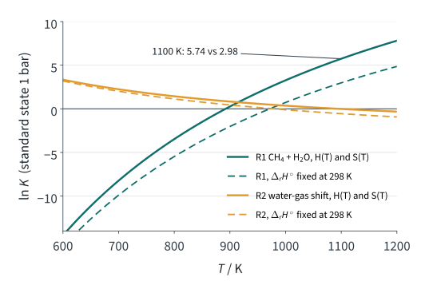
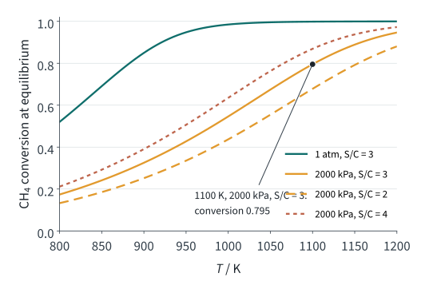
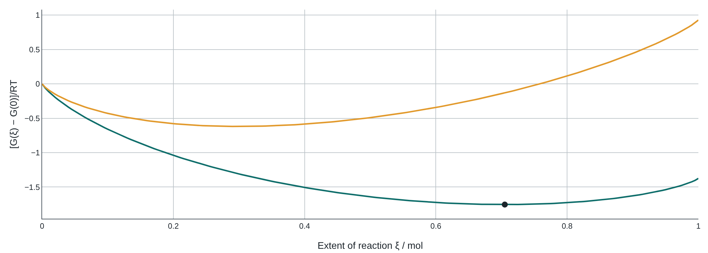

Session 5 of 7 · 180 minutes
Before the midterm Equations of state Fugacity and chemical potential Solution thermodynamics
After the midterm · 7 sessions 1 · VLE and flash 2 · Experimental VLE and consistency 3 · Liquid stability and LLE 4 · Solids and adsorption 5 · Chemical equilibrium 6 · Electrochemical equilibrium 7 · Choosing a model from evidence
Sessions 1–4 moved molecules between phases. Today they change identity. The condition is still a minimum of G, now constrained by the element balances. The usual errors are in K(T), the standard state and the number of reactions.

Steam methane reforming, the main industrial route to H₂:
R1 CH₄ + H₂O ⇌ CO + 3H₂
R2 CO + H₂O ⇌ CO₂ + H₂
At 1100 K, K₁ from tabulated H(T) and S(T) is 16 times the van ’t Hoff value with ΔrH° fixed at 298 K. At 2000 kPa that is the difference between 80 % and 50 % CH₄ conversion.
Data: Chase (1998), NIST-JANAF Tables, Shomate coefficients via the NIST Chemistry WebBook. Lab 12 E uses them.
Sessions 1–4 Equal chemical potential of each species in every phase.
\mu_i^{\alpha}=\mu_i^{\beta}
Today Zero Gibbs energy change along each independent reaction.
\sum_i\nu_{ij}\mu_i=0\ \Rightarrow\ \prod_i a_i^{\nu_{ij}}=K_j(T)
Same thing Minimum of total G subject to the element balances.
\min G\ \text{ s.t. }\ \sum_i a_{ki}n_i=b_k
Where you show it
0–30 Essential concepts K and P°, K(T), independent reactions, Kφ
30–40 Activity 1 K₁ two ways
40–60 Demo Lab 12
60–70 Break
70–140 Activity 2 · pair investigation Lab 12 A and C, then E with your own code
140–180 Discussion and exit ticket what fixes the composition
Session question Which inputs actually decide an equilibrium composition, and which mistakes change it by more than any model refinement?
Before class · 15–20 min Read the note on chemical equilibrium. Answer its three questions.
After class · 30–40 min Finish Lab 12 A, C and E, and submit the study file with your name and ID.
Studying on your own? Follow the same order. Turn on narration or captions at the bottom left, and pause at each activity slide.
\ln K=-\frac{\Delta_rG^\circ(T)}{RT}\qquad a_i=\frac{y_i\varphi_iP}{P^\circ}
K=K_y\,K_\varphi\Big(\frac{P}{P^\circ}\Big)^{\Delta\nu}
K depends on T and on the standard states only. P must be divided by the same P° that defined ΔrG°.
R1 at 1100 K, S/C = 3, 2000 kPa (Δν = +2)
| Pressure term used | CH₄ conversion |
|---|---|
| (2000/100)², correct for P° = 1 bar | 0.795 |
| term omitted, as if 1 bar | 0.996 |
Pressure lowers the conversion of a mole-increasing reaction. K itself does not change.
van ’t Hoff is exact:
\frac{\mathrm d\ln K}{\mathrm dT}=\frac{\Delta_rH^\circ(T)}{RT^2}
Holding ΔrH° at 298 K is the approximation. For R1, ΔrH° rises from 206.2 to 226.6 kJ/mol between 298 and 1100 K.
Safer: ΔrG°(T) = Σνi[Hi(T) − TSi(T)] from tabulated data.
ln K at 1100 K · NIST-JANAF
| H(T), S(T) | ΔrH° fixed | ratio of K | |
|---|---|---|---|
| R1 | 5.742 | 2.981 | 15.8 |
| R2 | −0.013 | −0.555 | 1.7 |
The error grows with |T − 298 K| and with ΔCp. It is not a rounding issue.
Element matrix (rows C, H, O; columns CH₄, H₂O, CO, CO₂, H₂):
\begin{pmatrix}1&0&1&1&0\\4&2&0&0&2\\0&1&1&2&0\end{pmatrix}
Rank 3, so 5 − 3 = 2 independent reactions. R1 and R2 are one choice. CH₄ + 2H₂O ⇌ CO₂ + 4H₂ is R1 + R2 and adds nothing.
Any independent pair gives the same composition. So does a Gibbs minimization with the element balances as constraints.
Add solid carbon and the count rises to 3: carbon deposition, for example 2CO ⇌ C + CO₂, becomes possible. The extents method only finds what its reaction list allows.
That is a modeling decision, not a coding one.
K_\varphi=\prod_i\varphi_i^{\nu_i}
At 1100 K and 2 MPa, every species is far above its critical temperature. The Pitzer virial correlation gives:
| ln φ | |
|---|---|
| CH₄ / H₂O | 0.0045 / −0.0030 |
| CO / CO₂ / H₂ | 0.0052 / 0.0045 / 0.0024 |
ln Kφ = 0.011 for R1 and 0.005 for R2: about 1 %, smaller than the uncertainty from how close a real catalyst bed gets to equilibrium.
Not so in Week 7’s example at 400 K and 2 MPa: Kφ = 1.06, a 2 % change in extent. Nor in ammonia synthesis at 20 MPa.
Check Kφ before you use it or drop it.
Activity 1 · 10 minutes · alone, then with a partner
R1 at 298.15 K: ΔrH° = 206.17 kJ/mol, ΔrS° = 212.2 J mol⁻¹ K⁻¹. Estimate ln K₁ at 1000 K with ΔrH° held constant.
The tabulated value is ln K₁(1000 K) = 3.269. Which way is your estimate off, and why? With S/C = 3 at 1 atm, the tabulated K gives 98.5 % conversion; is your error important here?
On your own: pause here, write your answer, then go to the next slide.
ΔrG°(298.15) = 206.17 − 298.15 × 0.2122 = 142.9 kJ/mol, so ln K₁(298.15) = −57.64.
ln K₁(1000) ≈ −57.64 − (206 170/8.314)(1/1000 − 1/298.15) = 0.73
Tabulated: 3.27. K is underestimated by a factor of 13, because ΔrH° grows with T.
At 1 atm the error hardly matters: conversion is near 1 either way.
At 2000 kPa it decides the answer: at 1100 K the two K values give 0.795 and 0.498.
The same error can be harmless in one design and decisive in another. Test it where you use it.

Pressure At 1000 K, S/C = 3: 98.5 % at 1 atm, 54.6 % at 2000 kPa. Plants still run at 2–3 MPa, for downstream use, and pay with higher T.
Steam At 1100 K, 2000 kPa: S/C = 2, 3, 4 gives 0.678, 0.795, 0.869.
Shift R2 is exothermic. Its K falls with T, so CO₂ forms at lower T and CO at higher T.

Lab 12 should report · starting case ln K = 1.3745 · K = 3.953 · ξ = 0.7050 · y(A) = 0.827 · teal: 100 kPa, amber: 1000 kPa
P in kPa with K defined at 1 bar. The pressure term is off by 100Δν.
ΔrH° held at 298 K over hundreds of kelvin. ln K₁ at 1100 K: 2.98 instead of 5.74.
One reaction too few. The composition can only use the reactions you wrote down.
Accepting the solver’s output unchecked. A start with CO = 0 or residuals in K, not ln K, can return an unconverged or negative answer.
You decide
The assistant may
Write and debug code that does exactly what your specification says. Not property values or conclusions.
Lab 12 step E recomputes from the NIST-JANAF data:
It names constant-ΔH K, P in kPa, a missing pressure term, and negative amounts.
Next Activity 2: a pair investigation in Lab 12, 70 minutes.
Before you leave your seat, check that Lab 12 opens on your device.
Activity 2 · 70 minutes · in pairs: one drives Lab 12, one checks by hand, then swap
15 min · by hand Element matrix and its rank for the five SMR species. Then with solid carbon added. Name the extra reaction.
20 min · Lab 12 A and C Carry K to other T with ΔCp = 0 and ≠ 0. Then pressure, inert gas and the 1 bar / 1 atm standard state. Save the study.
25 min · E your own code SMR at 1100 K, 2000 kPa, S/C = 3, then a case of your own. Specify, ask an AI assistant for the code, run it, check it in E.
10 min · explain Two sentences with numbers: which single input changes the 1100 K, 2000 kPa conversion most, and by how much?
On your own: do both roles yourself. Pause the slides, work in Lab 12, then continue.
Graduate extension Add Kφ from the Pitzer correlation to your code at 1100 K and 2000 kPa. How much does the conversion move? At what pressure would it move by 0.01?
Check your results · 1100 K, 2000 kPa, S/C = 3
| value | |
|---|---|
| ln K₁ / ln K₂ | 5.7422 / −0.0131 |
| CH₄ conversion | 0.7953 |
| y H₂ / CO / CO₂ / CH₄ | 0.4846 / 0.0844 / 0.0578 / 0.0366 |
| y H₂O | 0.3365 |
At 1000 K and 1 atm: conversion 0.9850, y H₂ 0.5623.
1100 K, 2000 kPa, S/C = 3 · a first-draft script and two revisions
| Version | ln K₁ | conversion | y CO₂ |
|---|---|---|---|
| start ξ₁ = ξ₂ = 0.5 | 2.981 | 0.500 | 0.100, the start |
| residuals in K, not ln K | 2.981 | 0.996 | −0.463 |
| ln K residuals | 2.981 | 0.498 | 0.043 |
| lab | 5.742 | 0.795 | 0.058 |
The first start put CO at zero and divided by it; the script printed the starting guess. The second did not converge and left the physical region.
What made all checks agree
The third version converged cleanly and was still wrong by 0.30 in conversion. Convergence checks the solver, not the thermodynamics.
Discuss in pairs, then with the class
K ln K = −ΔrG°(T)/RT for stated standard states. P enters as P/P°, with the same P°.
K(T) Use H(T) and S(T). Constant ΔrH° from 298 K misses ln K₁ at 1100 K by 2.8.
Composition Count reactions from the element matrix. Check Kφ before dropping it. Check convergence and positivity before believing a solver.
Session question: at 1100 K, 2000 kPa and S/C = 3, the conversion is 0.795. Constant-ΔH K gives 0.498, omitting the pressure term gives 0.996, raising S/C to 4 gives 0.869, and Kφ moves it by about 1 %.
Next session When does a reaction produce a voltage? Electrochemical equilibrium (Lab 13).
Exit ticket and feedback · alone · 5 minutes · anonymous
Your SMR code converges and gives 50 % CH₄ conversion at 1100 K and 2000 kPa. The lab gives 79.5 %. Name two causes you would check first, and the evidence that would separate them.
Scan the code or open the link. The same form asks three short questions about today: pace, confidence and whether the lab worked.
No name or student ID is recorded. Wait for “Response received.”
Hand in · this week Your Lab 12 study file with A, C and E, name and student ID.
Prepare · Session 6 Read the Session 6 pre-class note when it is posted. About 20 minutes.
Optional · graduate Lab 12 B: which way will a sample react? Then add Kφ to your E code.